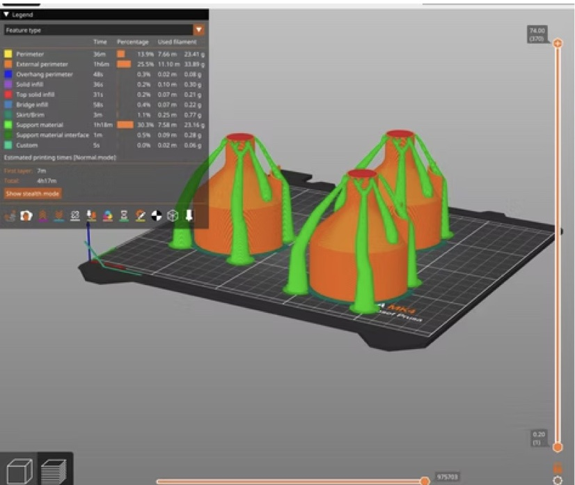

3D printing · sustainable design
Self-Watering Planter
A 3D-printed planter that waters itself, built for the basil and rosemary I cook with.


What
A 3D-printed self-watering planter for the herbs I cook with, mainly basil and rosemary, designed to keep plants healthy with less water and less attention.
How
- Design for printing: modeled the planter as a flared, bell-shaped body that prints without supports on most of its surface, with tree-style supports where overhangs required them.
- Slicing: sliced in PrusaSlicer and printed three planters per plate. The slicer estimate was about 4 h 17 min for the plate, with supports about 30% of print time.
- Printing: produced on a Prusa MK4 in black filament.
Results
Working planters for kitchen herbs. Next step: add growth and water-use data from basil and rosemary grown in them.